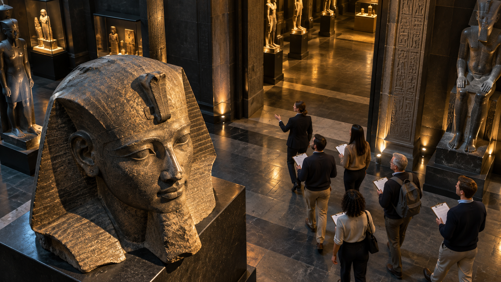
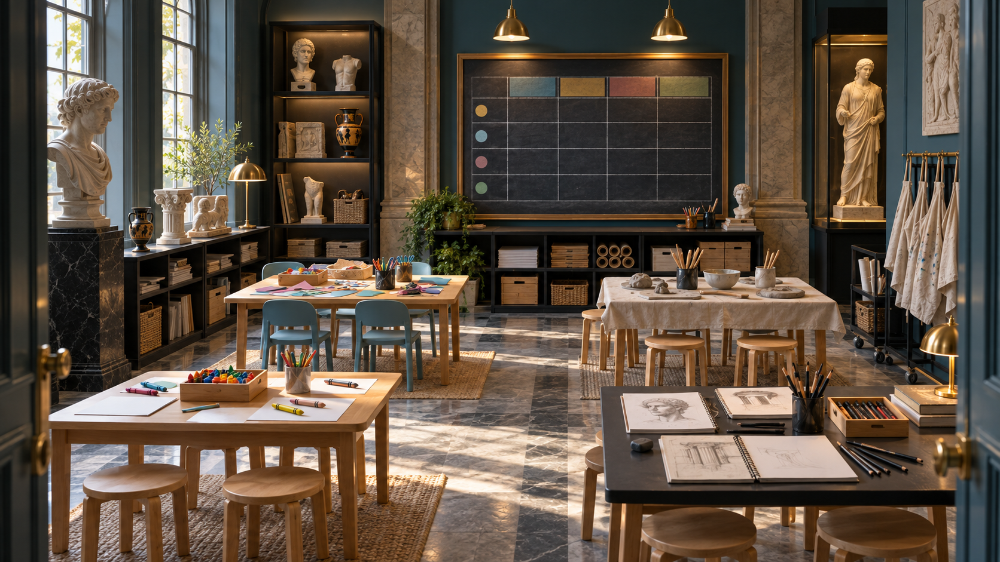
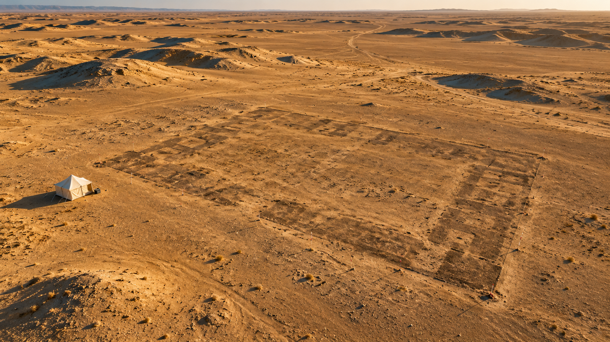

You already own map and plan tasks. This session covers the five remaining IELTS Listening formats — note completion, table, matching, MCQ, sentence completion — each on a fresh museum or archaeology topic, with edge-tts audio. Then a full Writing Task 1 pie-chart cycle and a Task 2 discussion essay, each with a Band 7.5–8 model answer to compare against your own draft.
Play each track once (Section 1–3 in the real test) or twice on the first pass. Fill the gaps or click the answers, then open the key and the transcript to compare.


| Programme | Age group | When | Fee |
|---|---|---|---|
| Little Explorers | Saturday mornings | £ | |
| Junior Curators | 10–14 | £ | |
| Sketch and Chat | Adults | ||
| Silver Circle | Every second Tuesday | £ |

Two pie charts, twenty years apart. Same question, same data type — Cambridge-style. Draft your own answer first, then open the model to compare structure, vocabulary and overview.
The two pie charts illustrate where visitors to a European national museum came from in 1998 and 2018, expressed as percentages of the total audience.
Overall, the museum's audience became noticeably more international over the twenty-year period: the share of domestic visitors fell sharply, while visitors from Asia in particular grew several times over.
In 1998, UK visitors clearly dominated the museum, accounting for nearly two-thirds of the total at 62 per cent. The remaining audience was made up of tourists from other European countries (22%), North America (11%), Asia (3%) and other regions (2%). By 2018, however, the UK share had declined to 41 per cent, meaning that fewer than half of the visitors were now from the host country.
The most striking change came from Asia, whose share rose fivefold, from 3 to 15 per cent. Other groups also grew, though more modestly: visitors from the rest of Europe increased from 22 to 27 per cent, and those from North America from 11 to 14 per cent. The 'Other' category remained broadly stable at 2–3 per cent. As a result, the museum's audience profile shifted from a largely national one to a genuinely international mix.
Cambridge-style 'discuss both views and give your opinion' prompt on a topic close to your own MA field. Plan for 3 minutes, write for 34, check for 3.
Whether public museums should be free to enter or funded through admission fees is a long-standing debate. Advocates of free access argue that culture belongs to everyone, while others insist that a reasonable charge is necessary to sustain the institutions themselves. In my view, a hybrid model — free entry for residents and paid tickets for foreign visitors — offers the best of both worlds.
Those who defend free admission point out that culture is a public good. Charging for entry effectively excludes low-income families, students and the elderly — precisely the groups that publicly funded institutions were established to serve. The British Museum, which has remained free since its foundation in 1753, is often cited as evidence that mass access does not preclude world-class scholarship. Free entry also encourages repeat visits: people are far more likely to spend a spare hour with a favourite painting when there is no financial cost.
On the other hand, proponents of admission charges emphasise the escalating costs of conservation, security and specialist staffing. Government subsidies rarely keep pace with these needs, and a modest fee — even five or six pounds — can generate substantial revenue when applied across millions of annual visitors. Institutions in Vienna, Florence and Amsterdam operate this model successfully, without any apparent loss of visitor numbers.
Personally, I favour a compromise. Residents of the host country, who already contribute through taxation, should enjoy free entry, while international tourists — who typically arrive with a budget for cultural activities — can reasonably be asked to contribute. Children and full-time students should always be admitted free, regardless of nationality.
Such a policy protects public access to heritage without starving institutions of the resources they need to preserve the very collections that draw visitors in the first place.